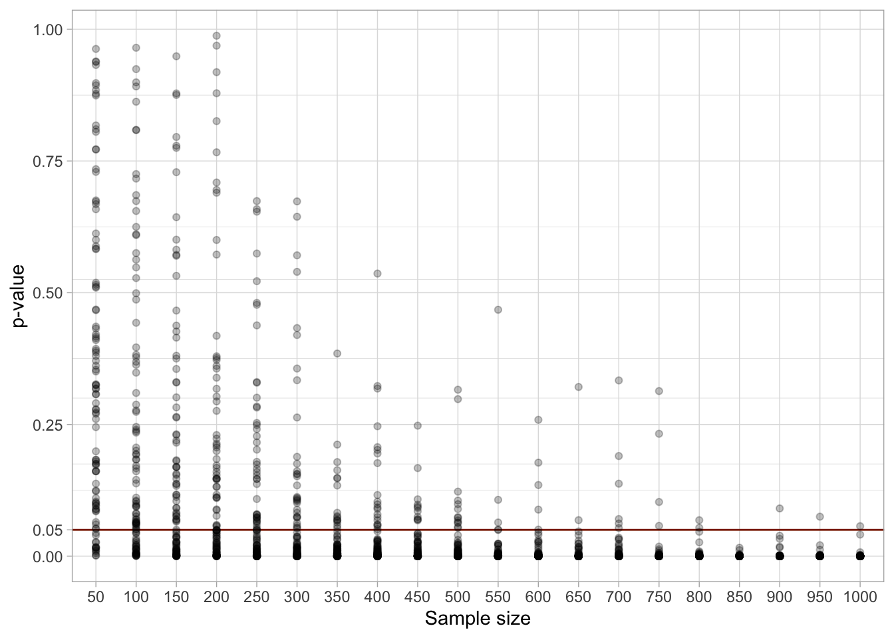

QML - Week 7
Frequentist statistics and the Null Ritual
1 Statistical significance
You have absolutely disproved the null hypothesis (that is, there is no difference between the population means).
You have found the probability of the null hypothesis being true.
You have absolutely proved your experimental hypothesis (that there is a difference between the population means).
You can deduce the probability of the experimental hypothesis being true.
You know, if you decide to reject the null hypothesis, the probability that you are making the wrong decision.
You have a reliable experimental finding in the sense that if, hypothetically, the experiment were repeated a great number of times, you would obtain a significant result on 99% of occasions.
2 Which statements are false?
3 Statistical significance is not meaningful
4 Statistical significance is not meaningful
5 What a p-value really means
. . .